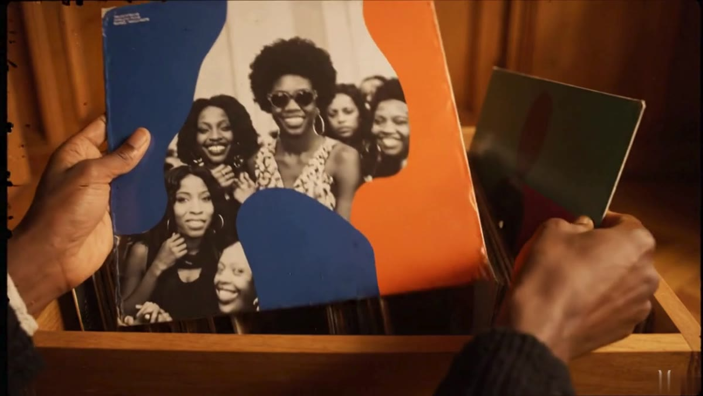
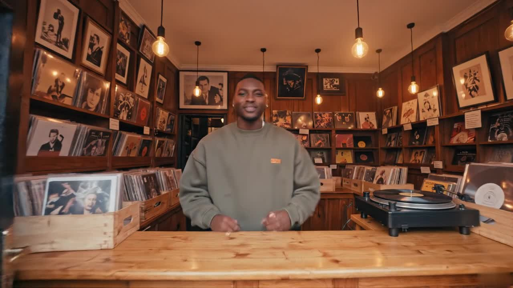
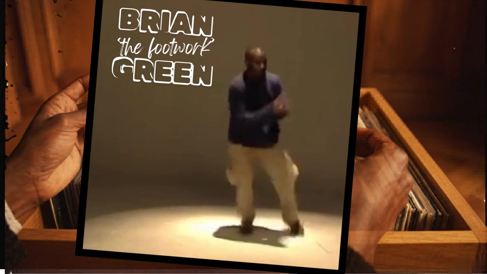
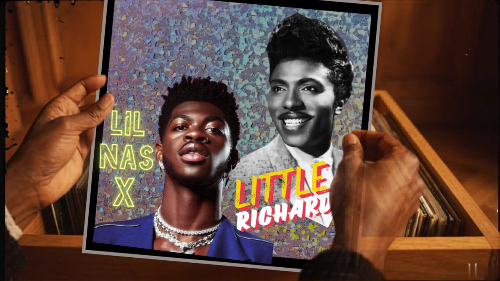
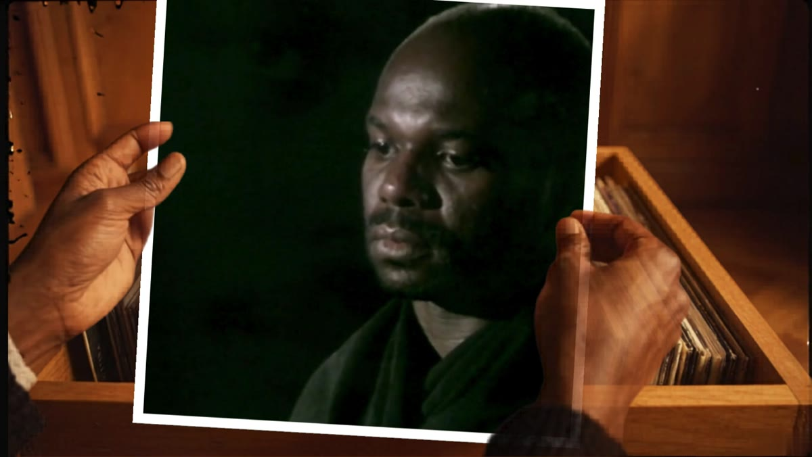
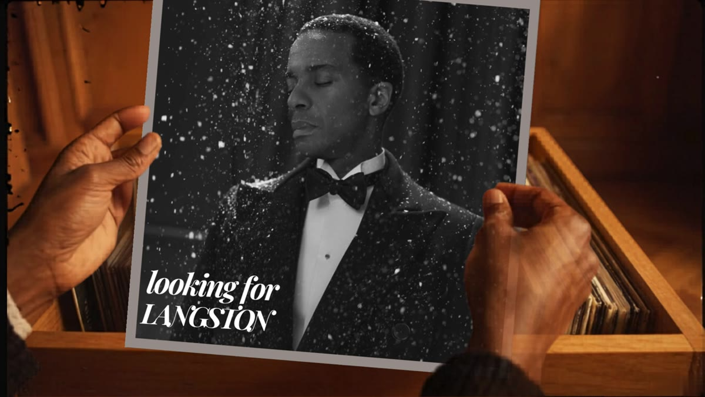
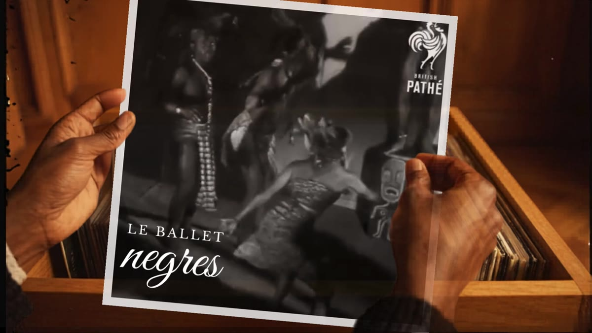
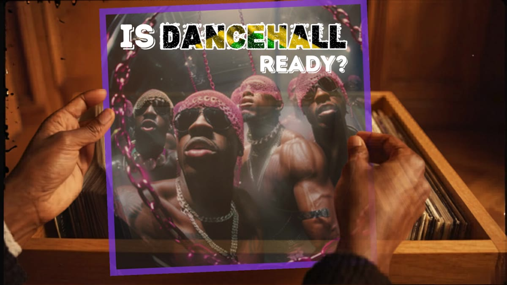
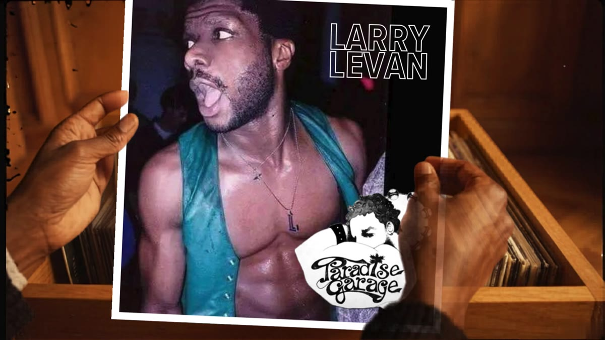

a BLKOUT programme mood boardEighteen curated rooms a year — live and online — building a community-owned archive of Black queer British taste.
A digital and live room curated by Black queer Britons. Each room — each playlist — gathers ten cultural moments around a theme, closing with one piece of original work.
Three kinds of room. One shared rhythm. Everyone paid the same flat rate.
Live, in person, at BCA. A curator's whole night: research, selection, sequencing, the counter note, hosting.
Online. The same curator relationship as a room, delivered to a screen rather than a building.
Open slots, defined by who pitches — a theme we missed, a member's story, a self-organised group, a partner org.
Curators with a public, guests whose platforms are their own — paid the same community rate as everyone else.
the ambition High-quality, big-impact rooms — a beacon for what heritage access can look like. Not a marketing budget: legitimacy and the quality of the room are the draw, not a fee.

The metaphor is the record shop; the experience is its opposite. No till, no transaction, no exchange asked. Entering doesn't reduce you to a customer — you can take good(s) away without stock depleting.
"The Dancefloor," below, is a theme — one of eighteen a year, not the show itself.
Every room, playlist and Responsive edition starts here: a theme worth ten stimuli and one original piece. Five more, to show the range:
Ten films — the ones that held a room before the calendar caught up.
Ten poems — protest, prayer, tenderness, work. What a hand is for.
Ten Baldwin clips — what it costs to arrive here at all.
Ten moments from the YouTube archive nobody's writing about anymore.
A commemoration edition, 1 December — close to home for this community's own history.
— one theme, sketched · The Ballroom Archive, indicative not cleared
Got a theme? Responsive editions exist because we won't think of everything.
send it overOne theme, worked in full — one room among eighteen a year.
Every room runs the same crate logic: ten cultural moments, curator-selected, light and shade — closing with one piece of original work, "Track 11," the curator's own. This worked example predates that ten-plus-one shape and runs eight; kept here because the thinking underneath it — the form, the sequencing, the register — is exactly what a curator brings to any theme. The form is the point, not this particular set.








We want to make
this with you.
Eighteen editions a year — rooms, playlists, and spaces held for the community — kept at Black Cultural Archives. We're looking for the partners who make the year real: production and staging, academic and archive partners, curators and guests ready to bring a public with them.